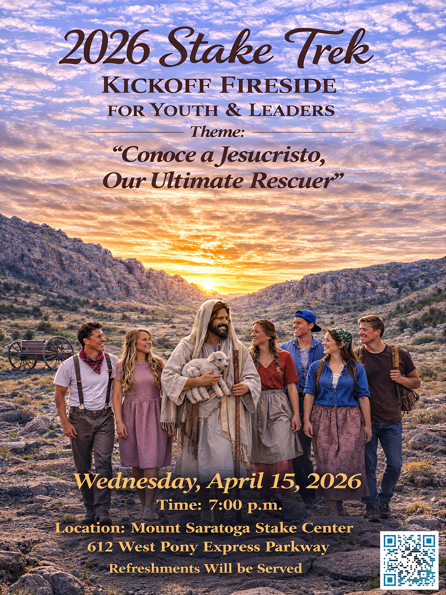

Dates
July 13–16, 2026
Four days • Three nights
Mount Saratoga Stake
Martin's Cove & Sixth Crossing
July 13–16, 2026
Late RegistrationJuly 13–16, 2026
Four days • Three nights
Martin's Cove
Sixth Crossing
Wyoming
ALL YOUTH
Turning 14 in 2026 through Graduating Seniors
Conoce a Jesucristo: Our Ultimate Rescuer
As your youth walks the same sacred ground where faithful pioneers endured unimaginable hardship, our prayer is that they will come to know Jesus Christ in a deeper, more personal way. He is the One who rescues us in our greatest moments of need, just as He rescued those faithful saints in 1856.

From 1856 to 1860, about 3,000 Latter-day Saints pulled handcarts across the American plains to gather in the Salt Lake Valley. These pioneers trekked more than a thousand miles through heat and cold; through mud, sand, and sometimes snow; and through rivers and over mountains. They faced trials that required great faith and perseverance.
Reenacting a trek can provide a powerful opportunity to strengthen testimonies, build unity, do family history, and learn core gospel principles. Treks can also help youth learn about who they are and what they may become.
Nestled along the Sweetwater River in central Wyoming, Martin's Cove is the site where members of the Martin Handcart Company sheltered from an early winter storm in 1856. Hundreds of pioneers endured extreme cold and exhaustion here, and their faith and perseverance left a permanent mark on Church history. Today the area is a sacred site visited by thousands each year.
Sixth Crossing marks the point where pioneer handcart companies forded the Sweetwater River for the sixth time on their journey to the Salt Lake Valley. Young men who witnessed the suffering at this crossing reportedly said they would never forget pulling the wagons through the icy water to help the freezing saints — an act of selfless service still commemorated today.
"We came through with the absolute knowledge that God lives, for we became acquainted with him in our extremities."
— Survivor of the Martin Handcart Company, 1856
Watch highlights from our 2022 Pioneer Trek experience.
Trek Kickoff Activity
Bucket and Flag Activity
Trek Family Activity
Squaredancing Activity
Pioneer Trek
Trek promises to be an incredible opportunity for our youth this year, and we are eagerly anticipating the chance to be on trek with the youth. Our food committee is dedicated to ensuring that everyone is well-fed and safe.
Our food committee chairs, Bro and Sister Sullivan manage multiple dietary concerns in their family, including Type 1 diabetes and celiac disease. They understand the importance of accommodating specific dietary needs. If you have youth with special dietary considerations, they would love to work with you and help your youth feel seen and cared for. To help us prepare, please fill out the registration form to let us know if you have any dietary requirements or medical conditions, such as:
Register for Pioneer Trek 2026!
Complete the registration form along with your medical release form.
Late RegistrationYou will be redirected to a secure Google Form.